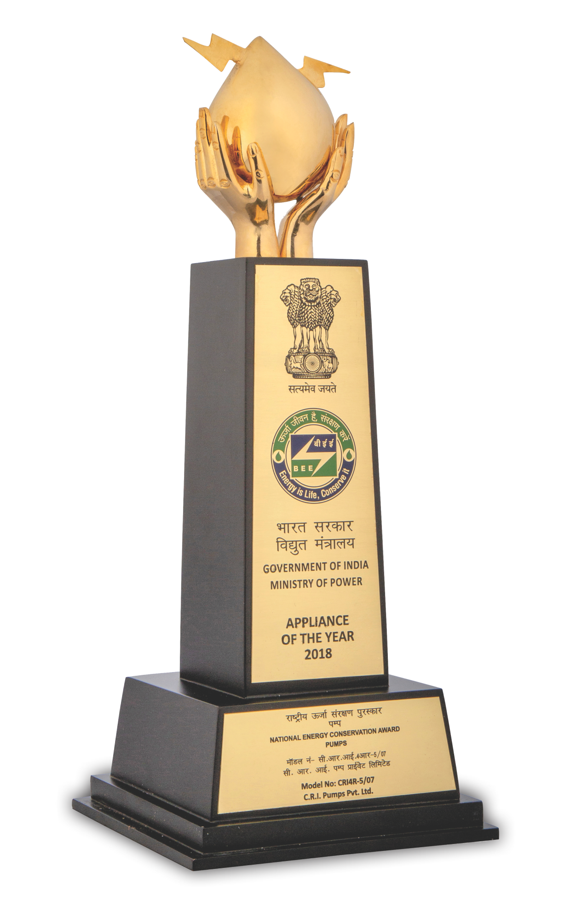

C.R.I. PUMPS WINS THE NATIONAL ENERGY CONSERVATION AWARD 2018 for the 4th time.
• C.R.I.'s energy efficient products are well recognized by various Government Institutions, as trustworthy products for various projects across the globe to save energy.
• C.R.I. is the highest contributor in the country for the projects of EESL (Energy Efficiency Services Limited) to replace the old inefficient pumps with 5 Star rated energy efficient smart pumps with IoT enabled control panel.

Government of India has awarded the "National Energy Conservation Award 2018". Mr. G. Selvaraj, Joint Managing Director of C.R.I. Group received the award from Smt. Sumitra Mahajan, Speaker of Lok Sabha & Shri. Raj Kumar Singh, Honorable Minister of State.